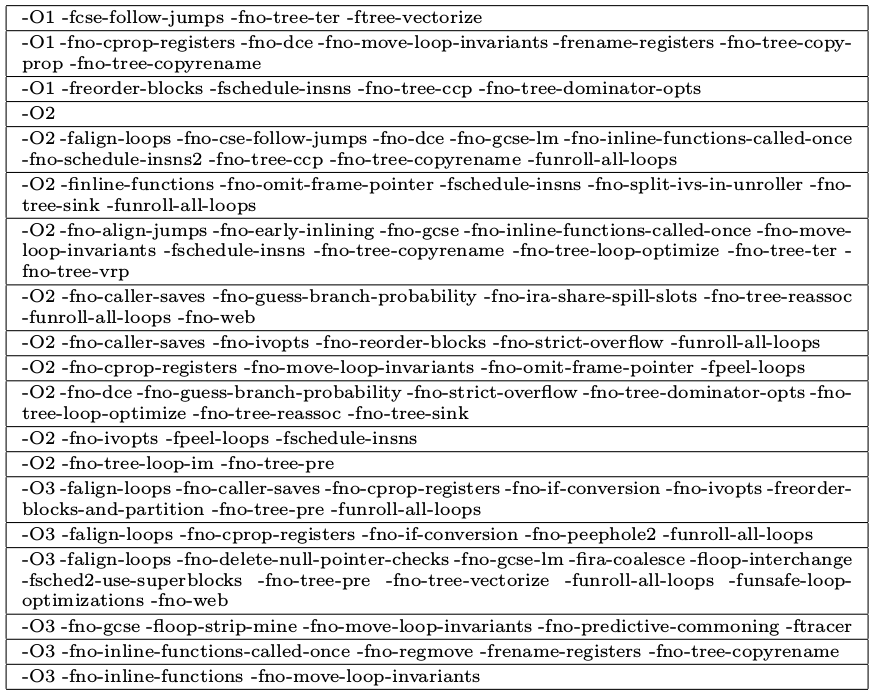
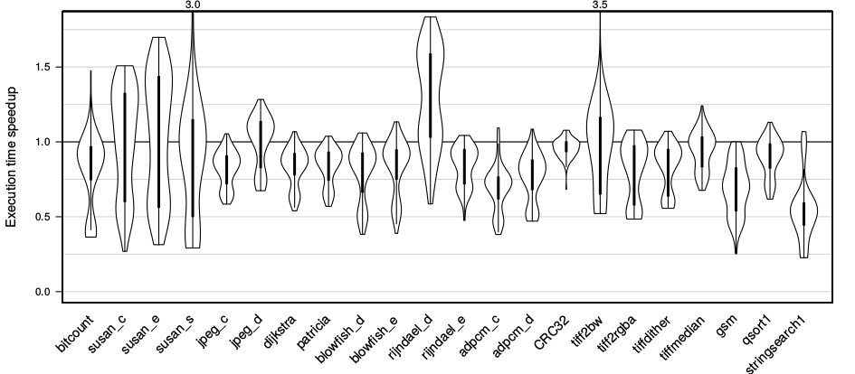
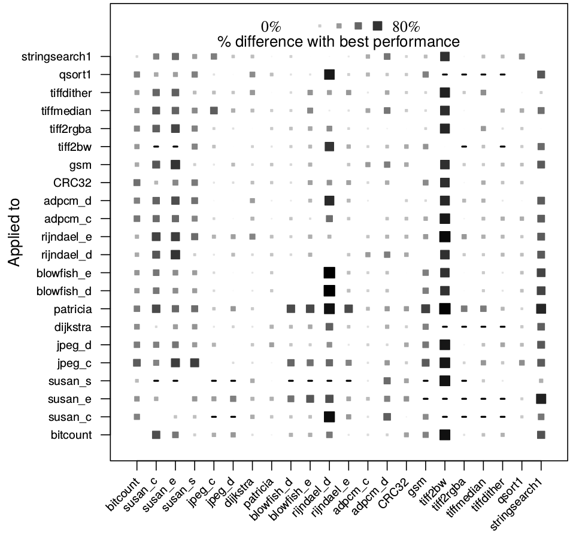
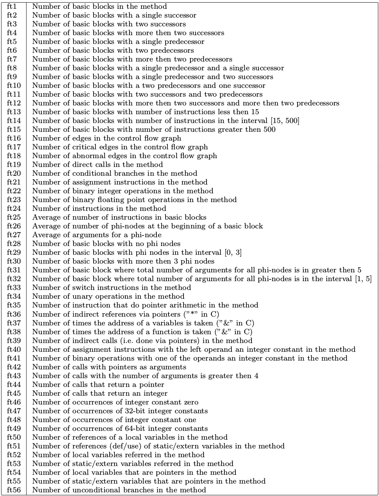
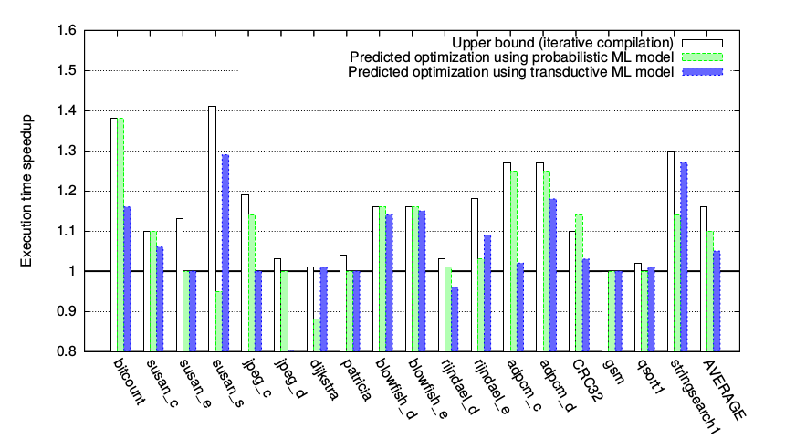
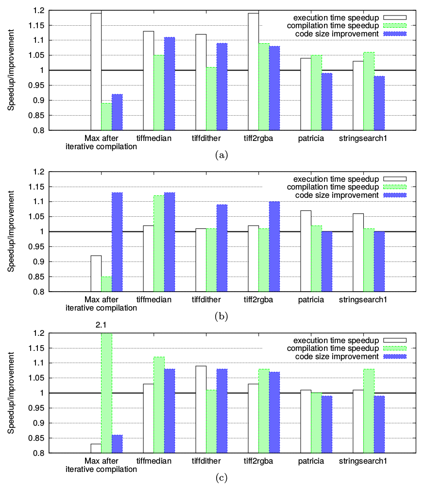

Milepost GCC
machine learning enabled self-tuning compiler
Grigori Fursin, Yuriy Kashnikov, Abdul Wahid Memon, Zbigniew Chamski, Olivier Temam, Mircea Namolaru, Elad Yom-Tov, Bilha Mendelson, Ayal Zaks, Eric Courtois, Francois Bodin, Phil Barnard, Elton Ashton, Edwin Bonilla, John Thomson, Christopher K. I. Williams, Michael O’Boyle
Presented by Emmanuel Bengio
Use the arrow keys or swipe to navigate
Motivation
- Optimization levels are generic (-O1..3)
- Optimize regardless of code organization
- It is possible to tweak flags to affect execution
- Modern architectures are very complex
- Machine learning is a great tool to generalize from data
Tweaking flags
They posit that:
- Tweaking flags has an (important) effect on:
- Compilation time
- Executable size
- Exectuable speed
- A solution is to tweak flags randomly
- At some point you will get something "better"
To test this, they select random flags, compile and test, 1000 times.
Tweaking flags
To test this, they select random flags, compile and test, 1000 times.

A few of the best flags for their benchmark.
Tweaking flags
Tweaking flags randomly takes an enormously inappropriate amount of time, but actually yields good results (sometimes).

Transferring flags
Two similar programs can probably make use of the same flags:

What does it all mean?
- It's ok to apply some flags to a never
before seen program
- If we can match programs that look
similar we can use similar flags
- and maybe expect similar speedups?
Question
How would you define a similarity metric for a method's code?
Question
How would you define a similarity metric for a method's code?
Answer: define a bunch of AST/CFG-related features that you can count. Then take Euclidian distance

Now we have everything we need to do
machine learning!
- A way to generate data
- An objective
- A desired process:
given some program features I want some optimal flags
Probabilistic approach
Want to learn a model:
$$q(x | t,\theta)$$
where \(x\) is a boolean vector of flags, \(t\) is a feature vector, and \(\theta\) is the parameter set of the distribution.
Then we want to do 1-shot prediction of the flags.
Probabilistic approach
$$q(x | t,\theta)$$
\(q\) is the probability that \(x\) is a good configuration of flags given \(t\)
To collect data:
- Sample 1000 programs with uniformly random flags
- Keep those at >95% of optimal speedup
Probabilistic approach
For simplicity they model the distribution as a joint of IID Bernoulli variables:
$$P(x|t) = \prod_i P(x_i|t)$$
Given \(q(x | t,\theta)\) for a new \(t_{new}\) we want:
$$ x^* = \mbox{argmax}_x q(x|t_{new},\theta) $$
but we can't really do that in a reasonable time.
Question
How would you approximate \(x^*\)?
$$ x^* = \mbox{argmax}_x q(x|t_{new},\theta) $$
Given a bunch to training examples \((x_i,t_j)\)
Finding \(q\)
The paper proposes two methods for "getting" \(q\):
- 1-nearest-neighbour
- decision tree
1-nearest-neighbour:
- Get \(q\) from nearest example in training data.
- Once you have \(q\), sample from it to get some \(x\).
- You now have a good set of flags with high-probability!
The tree approach gone wrong
The paper uses decision trees to compute the joint
$$f(x,t)=P(x,t)$$
So given a \(t\), try a bunch of \(x\) until they're good enough...?
when they should be using them to compute
$$f(t) = x^*$$
(which trees are good at!)
Results
They still get appreciable results:

Results

Execution time speedups (a), code size improvements (b) and compilation time
speedup (c)
Flaws of the paper
- Their final ML model is overly simple
- Their tree model is dubious
- Only capable of deciding flags on a per-file basis?
- They don't compare themselves (numerically) to other approaches
Questions?
Thank you for your attention
Machine Learning reminder
The very broad goal of machine learning is to learn an algorithm given a distribution of examples and a measure of performance.
$${\color{red}\mathcal{F}} = \mbox{argmin}_f \; {\color{blue}\mathcal{L}}\left(f,{\color{green}\mathcal{D}}\right)$$
Machine Learning reminder
A very typical way of phrasing the problem is using parameterized functions:
$${\color{red}\mathcal{F}} = \mbox{argmin}_f \; {\color{blue}\mathcal{L}}\left(f,{\color{green}\mathcal{D}}\right)$$
$$\Leftrightarrow$$
$${\color{red}\theta} = \mbox{argmin}_{\color{red}\theta} \; {\color{blue}\mathcal{L}}\left(f_{\color{red}\theta},{\color{green}\mathcal{D}}\right)$$
and now begins the fun of inventing parameterized functions.